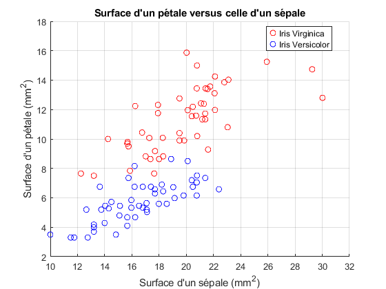

Des iris
Contents
Étape 1 – lecture
clear; close all; clc; C = readmatrix('Iris.xls');
Étape 2 – surface d'un sépale et d'un pétale

figure(1); grid on; hold on; axis([10,32,2,18]); plot(C(:,1).*C(:,2),C(:,3).*C(:,4),'or'); plot(C(:,5).*C(:,6),C(:,7).*C(:,8),'ob'); xlabel('Surface d''un sépale (mm^2)') ylabel('Surface d''un pétale (mm^2)') title(['Surface d''un pétale versus ',... 'celle d''un sépale']); legend('Iris Virginica','Iris Versicolor',... 'Location','best'); return

Étape 3 – dimensions du plus gros pétale
Rechercher l'indice de la ligne pour des iris Virginica (solution par programmation traditionnelle).
[nr,nc]=size(C); indice = 1; surfaceMax = C(1,3)*C(1,4); for i = 2:nr if(surfaceMax<C(i,3)*C(i,4)) indice = i; end end fprintf('La surface est de %.2f mm², soit\n',... C(indice,3)*C(indice,4)); fprintf(['%.1f mm de longueur par %.1f mm de ',... 'largeur.\n'], C(indice,3),C(indice,4)); plot(C(indice,1).*C(indice,2),... C(indice,3).*C(indice,4),'*g');
Solution par vectorisation
[surface,indice] = max(C(:,3).*C(:,4)); fprintf('La surface est de %.2f mm², soit\n',... C(indice,3)*C(indice,4)); fprintf(['%.1f mm de longueur par %.1f mm de ',... 'largeur.\n'], C(indice,3),C(indice,4));
Étape 4 – critère de séparation
Un examen du graphique révèle qu'il y a une séparation assez nette entre les 2 familles à 7.5 mm², en considérant la surface du pétale.
seuil = 7.5; Virginica = sum(C(:,3).*C(:,4)<seuil) Versicolor = sum(C(:,7).*C(:,8)>=seuil) ErreurPourCent = (Virginica+Versicolor)/(2*nr)*100